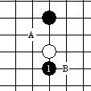
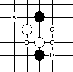
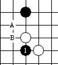
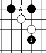
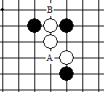
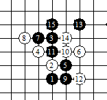
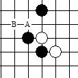

妖刀大寒星前几步定式
#1 妖刀大寒星前几步定式 作者：有志青年 发表时间：2007-10-27 17:27:28
1、第四步

（图一）
2.1、白4A后黑棋落子点

（图二）
黑A最强，BC次之，D白优，G没有定论

（图三）
3.1图二，黑走A后棋局变化情况

（图四）

（图五）
3.2图二，黑走B后棋局变化太多，不弄了，读者自己琢磨吧
3.3图二，黑棋走C后棋局变化，黑白最强走法

（图六）
4.1图三，黑棋走A后棋局变化太多，不弄了，读者自己琢磨吧
4.2图三，黑棋走B后棋局变化

就做到这里了，做这东西还真麻烦！o(∩_∩)o...哈哈
有不对的地方，请各位大侠不要吝啬的指出来！
#2 Re:妖刀大寒星前几步定式 作者：金色麦田 发表时间：2008-4-16 20:13:29
最后一副图白走B点，您标的A和我手上的妖刀谱A点不一样。由于无法截图不知道我这样说您能明白吗：我手上的A是F10上。我查了3种刀谱这步同样走的F10上。 另外您能否贴下峡月刀的 强点呢，谢谢。